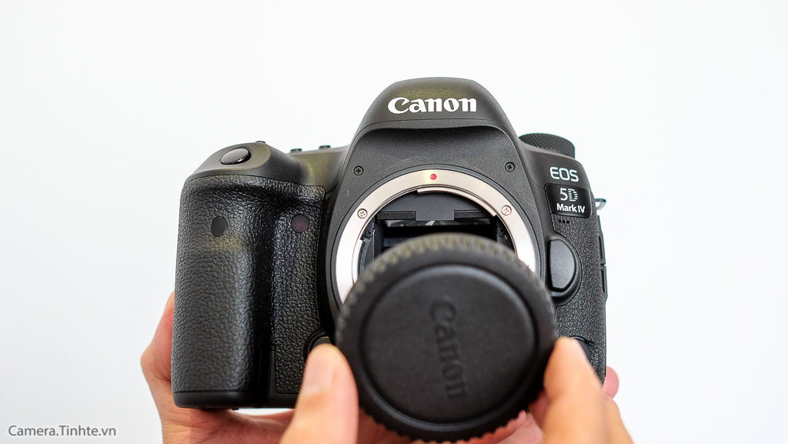

Cầm trên tay, mình thấy có mấy điểm đáng chú ý ở chiếc máy ảnh EOS 5D Mark IV mới ra mắt sáng nay như thế này: Thứ nhất là cái cảm biến FullFrame 30MP tích hợp công nghệ Dual Pixel CMOS AF và Pixel RAW tăng khả năng lấy nét và chất lượng hình; thứ hai là sử dụng bộ xử lý mới nhất trên 1DX Mark II là DIGIC6+ tăng tốc độ chụp liên tiếp lên 7fps (không nhanh lắm nhưng có cố gắng với cảm biến FF 30MP); thứ ba là nâng cấp khả năng quay video 4K 30p và HD120p, trong đó có chế độ quay Video HDR được coi là rất tiện lợi với nhiều môi trường chênh sáng phức tạp, thứ ba là tích hợp kết nối Wifi và GPS được coi là nhu cầu cần thiết hiện nay. Đó là những điểm chính yếu mà những người từng dùng một trong các đời 5D, cách riêng 5D Mark II mong đợi.
Thông số kỹ thuật chính của máy ảnh Canon EOS 5D Mark IV:
Cảm biến mới CMOS FullFrame 30MP, dải nhạy sáng ISO 100 - 32.000 (mở rộng 50 - 102.400)
Dual Pixel CMOS AF tăng khả năng lấy nét êm hơn khi quay video và Live View
Dual Pixel RAW tăng chính xác độ nét, khử bóng viền chi tiết, dịch chuyển bokeh mềm mại hơn.
61 điểm AF bao gồm 41 điểm lấy nét chữ thập
Quay video độ phân giải 4K (4096 x 2160) tại 30p/24p, trích ảnh 8.8MP, FullHD 60p và HD 120p
Bộ xử lý ảnh mới DIGIC 6+, chụp liên tiếp 7 fps
Tích hợp Wi-Fi, NFC và GPS

Những điểm nhấn quan trọng:
Thân máy được làm bằng ma-giê, sử dụng các lớp keo cao su dán kín tại những khớp nối khung máy đảm bảo kháng nước và chiu thời tiết. Kích thước và trọng lượng nhỏ hơn 5D Mark II và III một chút. Cụ thể là nặng 890g trong khi 5D Mark III là 950g.
Về thiết kế và sắp đặt các nút chức năng không có nhiều thay đổi: Ở mặt trước góc dưới là cổng cắm remote, mặt trên có nút M-Fn gán chức năng tuỳ chọn tại ví trí của ngón trỏ phải, mặt lưng có một chút thay đổi núm dịch chuyển 4 chiều. Riêng vòng chuyển chế độ Live View và Quay Video được mang từ 1DX Mark II qua, rất thuận tiện.
LCD 3.2" cảm ứng như chiếc máy chuyên nghiệp 1DX Mark II là chiếc FF đầu tiên có LCD cảm ứng của Canon. Riêng chế độ chụp Live View trên 5D Mark IV được nâng cấp một điểm là có thể thay đổi các chế độ đo sáng khác nhau, thay vì cố định đo sáng toàn khung khi bật Live View như trên 5D Mark III.
Các cổng giao tiếp ngoại vi giống 5D Mark III, có cổng tai nghe 3.5mm, trên 5D Mark II không có cổng này nên cần phương pháp phức tạp khác để kiểm soát âm thanh khi quay video.
Tích hợp kết nối Wifi, NFC và GPS. Wifi ngoài kết nối với các thiết bị cầm tay chuyển lưu dữ liệu hình ảnh, còn có thể thiết lập kết nối qua giao thức FTP server có chế độ bảo mật để truyền hình ảnh, phục vụ giới báo chí. GPS thì có hai chế độ hoạt động, hoặc hoạt động liên tục kể cả khi tắt máy, hoặc tạm ngưng khi tắt máy để tiết kiệm pin.
Quay video độ phân giải cao nhất 4K 30p, FHD 60p và HD 120p có thể quay slow-motion. Tất cả chế độ quay đều có thể kích hoạt tính năng Video HDR hiệu quả trong những hoàn cảnh chênh sáng mạnh. Mình coi demo thì thấy rất hiệu quả, nhưng sẽ thử nghiệm tính năng này, vì khá tiện dụng trong việc quay.
Nâng cấp quan trọng nhất là cảm biến CMOS FF 30MP với công nghệ Dual Pixel CMOS AF tăng hiệu quả lấy nét, chất lượng hình ảnh cao hơn. Có tất cả 61 điểm lấy nét AF, trong đó có 41 điểm lấy nét chữ thập.
Bộ xử lý hình ảnh sử dụng chính bộ xử lý của 1DX Mark II chỉ khác là 1DX Mark II chạy bộ xử lý kép. Nâng tốc độ chụp liên tiếp lên 7fCanon tích hợp trong đó hồ sơ các ống kính khẩu lớn hoặc có hiện tượng quang sai, méo góc... tự nhận diện khi chụp và chỉnh sửa trực tiếp mà không phải qua phần mềm.
Cùng ra mắt với EOS 5D Mark IV, Canon ra mắt 2 ống kính mới Canon EF 16-35mm f/2.8L III USM và Canon EF 24-105mm f/4L IS II USM.
Tại Việt Nam chưa có giá chính thức, Canon công bố lúc ra mắt:
Body EOS 5D Mark IV: 3500 USD
kèm ống kính 24-105mm f/4 K IS đời II: 4600 USD
Cách đây 11 năm (2005) Canon ra mắt chiếc 5D đời đầu cảm biến FF 12MP giá 3300 USD cũng là chiếc tạo ấn tượng với giới nhiếp ảnh rất lâu dài, 3 năm sau (2008) Canon ra chiếc máy rất thành công với cấu hình rất mạnh trong thị trường máy ảnh bấy giờ, nhất là quay Video FHD trên cảm biến FF và vẫn được ưa chuộng cho đến tận bây giờ là chiếc 5D Mark II với giá dễ chịu hơn: 2700 USD, bốn năm sau (2012) ra chiếc máy không đáng được chờ đợi vì không có nâng cấp gì đột biến 5D Mark III với giá 3500 USD. Bây giờ, 5D Mark IV có nhiều nâng cấp xứng đáng, nếu có mong ước hơn chỉ là tốc độ chụp liên tiếp cao hơn 7fps như đã nói. Nhưng ai ưa chuộng dòng 5D có lẽ cũng đắn đo để lên đời!